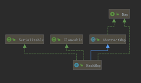
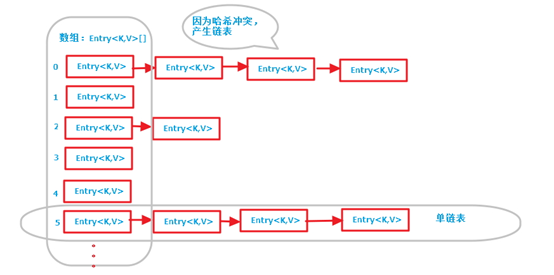
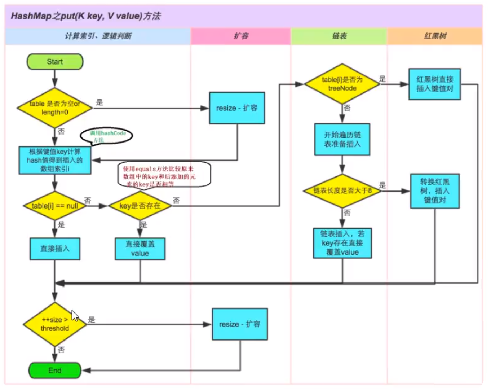
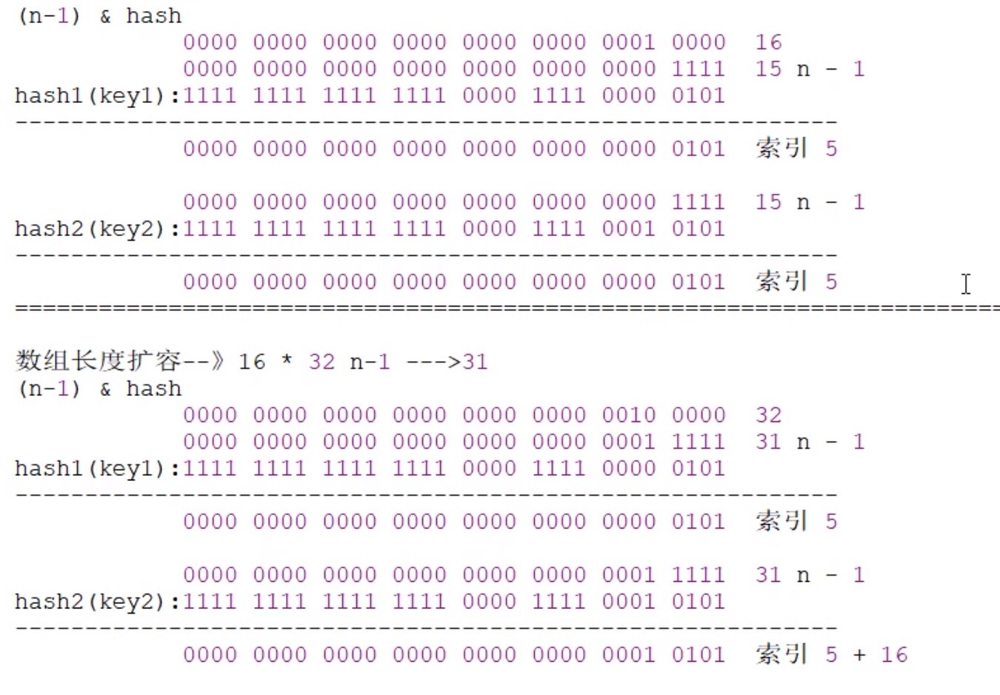
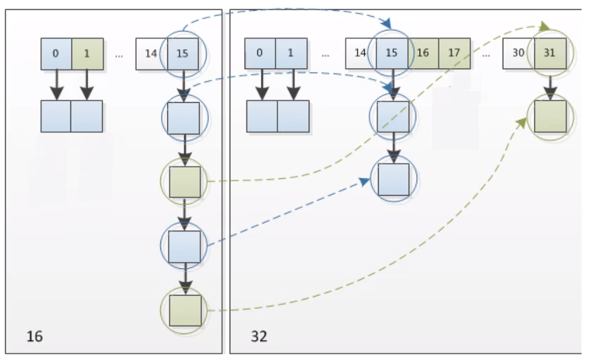

HashMap原理
HashMap
继承和实现接口

- Cloneable 空接口，表示可以克隆。创建并返回HashMap对象的一个副本
- Serializable 序列化接口。属于标记性接口。HashMap对象可以被序列化和反序列化
- AbstractMap父类提供了Map实现接口。以最大限度地减少实现此接口所需的工作
- 补充一个很奇怪的现象：HashMap已经继承了AbstractMap，而AbstractMap类实现了Map接口，那为什么HashMap还要在实现Map接口呢?同样在ArrayList中LinkedList中都是这种结构。
- 据java集合框架的创始人描述， 这样的写法是一个失误。在java集合框架中，类似这样的写法很多，最开始写java集合框架的时候，他认为这样写在某些地方可能是有价值的，直到他意识到错了。显然的，JDK的维护者，后来不认为这个小小的失误值得去修改，所以就这样存在下来了。
特点
- 在JDK1.8之前，哈希表底层采用数组+链表实现，即使用链表处理冲突，同一hash值的元素都存储在一个链表里。但是当位于一个桶中的元素较多，即hash值相等的元素较多时，通过key值依次查找的效率较低。【”拉链法”解决冲突】
- 从jdk1.8开始，增加了红黑树的结构，当单链表中元素个数超过指定阈值，会转化为红黑树结构存储，目的就是为了解决单链表元素过多时查询慢的问题。
- 线程不安全的，方法都未使用synchronized关键字。
- 允许key和value值为null
- 增删改查全是
O(1)
底层结构：数组和单链表

成员变量
序列化版本号
1
private static final long serialVersionUID = 362498820763181265L;
集合的初始化容量(必须是二的n次幂)
1
2
3
4/**
* 默认初始化值为16
*/
static final int DEFAULT_INITIAL_CAPACITY = 1 << 4; // 16如果输入值不是2的幂，结果怎么样？
HashMap构造方法可以指定集合的初始化容量大小，容量为大于等于设定值的最小2的幂数
1
2
3
4
5
6
7
8
9
10
11
12
13
14
15
16
17
18
19
20
21
22
23
24
25
26
27
28
29
30
31
32
33
34
35/**
* 参数为初始化的table长度
*/
public HashMap(int initialCapacity) {
this(initialCapacity, DEFAULT_LOAD_FACTOR);
}
public HashMap(int initialCapacity, float loadFactor) {
if (initialCapacity < 0)
throw new IllegalArgumentException("Illegal initial capacity: " +
initialCapacity);
//判断初始化容量initialCapacity是否大于集合的最大容量2的30次幂
if (initialCapacity > MAXIMUM_CAPACITY)
//如果超过,会将MAXIMUM_CAPACITY赋值给initialCapacity
initialCapacity = MAXIMUM_CAPACITY;
//判断负载因子1oadFactor是否小于等于0或者是否是一个非数值
if (loadFactor <= 0 || Float.isNaN(loadFactor))
//如果满足上述其中之一，则抛出非法的参数异常IllegalArgumentException
throw new IllegalArgumentException("Illegal load factor: " +
loadFactor);
this.loadFactor = loadFactor;
// 赋值给了threshold 在第一次put(K key, V value)元素时 因为table==null调用resize()方法 并将threshold赋值capacity⭐
this.threshold = tableSizeFor(initialCapacity);
}
// 返回大于等于cap的最小2的幂数
static final int tableSizeFor(int cap) {
int n = cap - 1; //保证cap本身是2的幂数时 返回自身而不是cap*2
n |= n >>> 1;
n |= n >>> 2;
n |= n >>> 4;
n |= n >>> 8;
n |= n >>> 16;
return (n < 0) ? 1 : (n >= MAXIMUM_CAPACITY) ? MAXIMUM_CAPACITY : n + 1;
}
默认的负载因子，默认值是0.75
1
2
3
4
5
6
7/**
* 默认加载因子
* 加载因子用来表示哈希表元素的填满程度，越大则表示允许填满的元素就越多
* 哈希表的空间利用率就越高，但是冲突的机会也就增加了
* 反之，越小则冲突的机会就会越少，但是空间很多就浪费了。
*/
static final float DEFAULT_LOAD_FACTOR = 0.75f;- 为什么加载因子设置为0.75
- loadFactor越趋近于1，那么数组中存放的数据(entry)也就越多，会让链表的长度增加，查找元素效率低
- loadFactor越趋近于0，数组中存放的数据(entry)也就越少，越稀疏，造成数组利用率太低了
- 为什么加载因子设置为0.75
集合最大容量
1
2
3
4/**
* 最大容量 必须不大于2的30次幂
*/
static final int MAXIMUM_CAPACITY = 1 << 30;当链表的值超过8则会转红黑树(1.8新增)
1
2
3
4
5/**
* hash冲突默认采用单链表存储，当单链表节点个数大于8时
* 自动转换为红黑树
*/
static final int TREEIFY_THRESHOLD = 8;当链表的值小于6则会从红黑树转回链表
1
2
3
4/**
* 当桶节点个数小于6时 树转换为单链表存储
*/
static final int UNTREEIFY_THRESHOLD = 6;当Map里面的数量超过这个值时，表中的桶才能进行树形化，否则桶内元素太多时会扩容，而不是树形化
- 为了避免进行扩容、树形化选择的冲突，这个值不能小于4 * TREEIFY_ THRESHGLD【8】=32
1
2
3
4
5
6/**
* hash冲突默认采用单链表存储，当单链表节点个数大于8时 ⭐
* 自动转换为红黑树
* 前提是：table数组长度大于64，否则不会转换，进行扩容操作⭐
*/
static final int MIN_TREEIFY_CAPACITY = 64;table用来初始化(必须是2的n次幂)(重点)
1
2
3
4
5
6
7
8/**
* 数组保存着每个链表的表头结点
The table, initialized on first use, and resized as
* necessary. When allocated, length is always a power of two.
* (We also tolerate length zero in some operations to allow
* bootstrapping mechanics that are currently not needed.)
*/
transient Node<K,V>[] table;JDK1.8中，我们了解到HashMap是由数组加链表加红黑树来组成的结构，其中table就是HashMap中的数组
jdk8之前数组类型是Entry<K,V>类型。从jdk1.8之后是Node<K,V>类型。 只是换了个名字，都实现了一样的接口:Map.Entry<K,V>。负责存储键值对数据的。
存放缓存
1
2
3
4
5
6//存放具体元素的集合
/**
* Holds cached entrySet(). Note that AbstractMap fields are used
* for keySet() and values().
*/
transient Set<Map.Entry<K,V>> entrySet;HashMap中存放元素的个数(重点)
1
2//存放元素的个数，注意这个不等于数组的长度。
transient int size;size为HashMap中K-V的实时数量，不是数组table的长度
用来记录HashMap的修改次数
1
2//每次扩容和更改map结构的计数器
transient int modCount;用来调整大小下一个容量的值计算方式为(容量*负载因子)
1
2
3
4
5
6/**
* 临界值大小 (capacity * load factor)
* 超过此值后resize()
* 如果table表还未分配，则此值存储table欲初始长度或0(DEFAULT_INITIAL_CAPACITY)
*/
int threshold;哈希表的加载因子(重点)
1
2//加载因子
final float loadFactor;- 默认值为0.75f是官方给出的一个比较好的临界值，扩容这个过程涉及到rehash、复制数据等操作，非常消耗性能，所以开发中尽量减少扩容的次数，可以通过创建HashMap集合对象时指定初始容量来尽量避免
构造方法
在JDK8前，当创建HashMap集合对象的时候，构造方法中创建一个长度是16的
Entry[] table用来存储键值对数据的。在jdk8以后，不是在HashMap的构造方法底层创建数组了，是在第一次调用put方法时创建的数组，
Node[] table用来存储键值对数据的构造一个空的HashMap ，默认初始容量(16) 和默认负载因子(0.75) 。
1
2
3
4
5
6/**
* 初始大小(16)和加载因子(0.75)
*/
public HashMap() {
this.loadFactor = DEFAULT_LOAD_FACTOR; // all other fields defaulted
}构造一个具有指定的初始容量和默认负载因子(0.75)
1
public HashMap(int initialCapacity)
构造一个具有指定的初始容量和负载因子的HashMap
1
public HashMap(int initialCapacity, float loadFactor)
包含另一个”Map”的构造函数
1
2
3
4
5
6
7
8
9
10
11
12
13
14
15
16
17
18
19
20
21
22
23
24
25
26
27
28
29
30
31
32public HashMap(Map<? extends K, ? extends V> m) {
this.loadFactor = DEFAULT_LOAD_FACTOR;
putMapEntries(m, false);
}
final void putMapEntries(Map<? extends K, ? extends V> m, boolean evict) {
int s = m.size();
if (s > 0) {
// 如果table == null threshold则存储table欲初始长度或0
if (table == null) { // pre-size
// 因为在resize为第一次为table分配空间时，新的threshold = threshold(table欲初始长度) * loadFactor 其本质同else if(s > threshold) 只不过resize() 会在第一次put元素时进行
float ft = ((float)s / loadFactor) + 1.0F;
// ⭐ 为什么+1
// s/loadFactor的结果是小数，加1.0F与(int)ft相当于是对小数做一个向上取整以尽可能的保证更大容量，更大的容量能够减少resize的调用次数。所以+ 1.0F是为了获取更大的容量。
//例如:原来集合的元素个数是6个，那么6/0.75是8, 是2的n次幂,那么新的数组大小就是8了。然后原来数组的数据就会存储到长度是8的新的数组中了，这样会导致在存储元素的时候，容量不够，还得继续扩容,那么性能降低了， 而如果+1呢， 数组长度直接变为16了，这样可以减少数组的扩容。
int t = ((ft < (float)MAXIMUM_CAPACITY) ?
(int)ft : MAXIMUM_CAPACITY);
//threshold=0
if (t > threshold)
threshold = tableSizeFor(t);
}
//已初始化，并且m元素个数大于阈值，进行扩容处理
else if (s > threshold)
resize();
// 将m中的所有元素添加至HashMap中
for (Map.Entry<? extends K, ? extends V> e : m.entrySet()) {
K key = e.getKey();
V value = e.getValue();
putVal(hash(key), key, value, false, evict);
}
}
}
迭代器
1 | /** |
成员方法
Put方法
JDK 1.8以前HashMap的实现是数组+链表，即使哈希函数取得再好，也很难达到元素百分百均匀分布。当HashMap中有大量的元素都存放到同一个桶中时，这个桶下有一条长长的链表，这个时候HashMap就相当于一个单链表，假如单链表有n个元素，遍历的时间复杂度就是O(n)，完全失去了它的优势。
JDK 1.8中引入了红黑树（查找时间复杂度为
O(logn))）来优化这个问题。当链表长度大于阈值（或者红黑树的边界值，默认为8）并且当前数组的长度大于64时，此时此索引位置上的所有数据改为使用红黑树存储。将链表转换成红黑树前会判断，即使阈值大于8，但是数组长度小于64，此时并不会将链表变为红黑树。而是选择进行数组扩容。
- 因为数组比较小，尽量避开红黑树结构，这种情况下变为红黑树结构，反而会降低效率，因为红黑树需要进行左旋，右旋，变色这些操作来保持平衡。同时数组长度小于64时，搜索时间相对要快些。所以为了提高性能和减少搜索时间，底层在阈值大于8并且数组长度大于64时，链表才转换为红黑树。具体可以参考treeifyBin方法。

函数解析
1
2
3
4
5
6
7
8
9
10
11
12
13
14
15
16
17
18
19
20
21
22
23
24
25
26
27
28
29
30
31
32
33
34
35
36
37
38
39
40
41
42
43
44
45
46
47
48
49
50
51
52
53
54
55
56
57
58
59
60
61
62
63
64
65
66
67
68
69
70
71
72
73
74
75
76
77
78
79
80
81
82
83
84
85
86
87
88
89
90public V put(K key, V value) {
return putVal(hash(key), key, value, false, true);
}
static final int hash(Object key) {
int h;
// 进行高16位和低16位的异或操作，增加低16位的随机性，减少hash冲突⭐
return (key == null) ? 0 : (h = key.hashCode()) ^ (h >>> 16);
}
/**
* Implements Map.put and related methods.
*
* @param hash key的hash值
* @param val 原始Key
* @param value 要存放的值
* @param onlyIfAbsent 如果true代表不更改现有的值
* @param evict 如果为false表示table为创建状态
* @return previous value, or null if none
*/
final V putVal(int hash, K key, V value, boolean onlyIfAbsent,
boolean evict) {
Node<K,V>[] tab; Node<K,V> p; int n, i;
// 首次table为空 通过resize()函数初始化
if ((tab = table) == null || (n = tab.length) == 0)
n = (tab = resize()).length;
// 查找key的hash值在数组中的位置
// 因为设计上，n一定为2次幂。那么n-1的低位就全是1，哈希值进行与操作时可以保证低位的值不变，效果等同于hash%n，但是位运算比取余运算要高效的多
// 如果索引位置无元素，创建Node对象保存
if ((p = tab[i = (n - 1) & hash]) == null)
tab[i] = newNode(hash, key, value, null);
// 如果索引位置有元素，说明hash冲突，存入单链表或红黑树
else {
Node<K,V> e; K k;//e为保存返回Value的Node
// 如果单链表或者红黑树首个Node的key的hash值相同 && key相同，则进行value替代
if (p.hash == hash &&
((k = p.key) == key || (key != null && key.equals(k))))
e = p;
//如果索引表中第一个Node的p是红黑树结构 则调用红黑树版本的putVal函数
else if (p instanceof TreeNode)
e = ((TreeNode<K,V>)p).putTreeVal(this, tab, hash, key, value);
//索引表中第一个Node的p是链表，则遍历到链表尾部添加，过程中判别是否存在key值相同的情况
else {
//计数链表长度
for (int binCount = 0; ; ++binCount) {
//遍历到表尾
if ((e = p.next) == null) {
//追加到单链表的末尾 ⭐尾插法
p.next = newNode(hash, key, value, null);
//超过树化的阈值则进行树化操作
if (binCount >= TREEIFY_THRESHOLD - 1) // -1 for 1st
treeifyBin(tab, hash);
break;
}
//链表中间的Node key的hash值与插入的Node相同 && key与插入的Node相同
if (e.hash == hash &&
((k = e.key) == key || (key != null && key.equals(k))))
break;
// 不同 e = p.next 拉链法继续遍历
p = e;
}
}
// 存在 hash值相同 && Key值相同 Node
if (e != null) {
V oldValue = e.value;
if (!onlyIfAbsent || oldValue == null)
e.value = value;
afterNodeAccess(e);
return oldValue;
}
}
// 元素已经put进入
++modCount; //修改记录次数
//判断实际大小是否大于threshold阈值，如果超过则扩容
if (++size > threshold)
resize();
afterNodeInsertion(evict);
return null;
}
/*
* 内部类函数
* static class Node<K,V> implements Map.Entry<K,V> {
*/
Node(int hash, K key, V value, Node<K,V> next) {
this.hash = hash;
this.key = key;
this.value = value;
this.next = next;
}
TreeifyBin方法
- 节点添加完成之后判断此时节点个数是否大于TREEIFY_ THRESHOLD临界值8,如果大于则将链表转换为红黑树，转换红黑树的方法treeifyBin, 整体代码如下:
1 | // 1.Node结点单链表转化为TreeNode结点双向链表 |
Resize方法
在不断的添加数据的过程中，会涉及到扩容问题，当超出临界值(且要存放的位置非空)时,扩容。默认的扩容方式:扩容为原来容量的2倍，并将原有的数据复制过来。
什么时候才需要扩容
- 当HashMap中的元素个数超过
数组大小(数组长度)*loadFactor(负载因子) - 当HashMap中的其中一个链表的对象个数如果达到了8个，此时如果数组长度没有达到64,那么HashMap会先扩容解决
- 当HashMap中的元素个数超过
HashMap的扩容是什么
数组长度扩大一倍，然后重新计算每个元素在数组中的位置，使用的rehash方式非常巧妙，与原来计算的
(n-1)&hash的结果相比，只是多了一个bit位索引位置要么是原来索引，要么是原来索引+ 旧数组的容量

由于新增的1bit是0还是1可以认为是随机的，在resize的过程中保证了rehash之后每个桶上的节点数一定小于等于原来桶上的节点数，保证了rehash之后不会出现更严重的hash冲突，均匀的把之前的冲突的节点分散到新的桶中了。
函数解析
1
2
3
4
5
6
7
8
9
10
11
12
13
14
15
16
17
18
19
20
21
22
23
24
25
26
27
28
29
30
31
32
33
34
35
36
37
38
39
40
41
42
43
44
45
46
47
48
49
50
51
52
53
54
55
56
57
58
59
60
61
62
63
64
65
66
67
68
69
70
71
72
73
74
75
76
77
78
79
80
81
82
83
84
85
86
87
88
89
90
91
92final Node<K,V>[] resize() {
Node<K,V>[] oldTab = table;
int oldCap = (oldTab == null) ? 0 : oldTab.length;
int oldThr = threshold;
int newCap, newThr = 0;
// 此时table不为空 table已经分配空间
if (oldCap > 0) {
// 数组长度已经为最大 提高threshold 变相提高加载因子
if (oldCap >= MAXIMUM_CAPACITY) {
threshold = Integer.MAX_VALUE;
return oldTab;
}
// double threshold
else if ((newCap = oldCap << 1) < MAXIMUM_CAPACITY &&
oldCap >= DEFAULT_INITIAL_CAPACITY)
newThr = oldThr << 1;
}
// 此时table为空 threshold【根据构造方法】存储欲初始长度
// 将欲初始化长度赋值newcap
else if (oldThr > 0) // initial capacity was placed in
newCap = oldThr;
// 此时table为空 threshold存储0 将默认table长度16 赋值newcap
// newThr 为16*0.75=12
else { // zero initial threshold signifies using defaults
newCap = DEFAULT_INITIAL_CAPACITY; // 16
newThr = (int)(DEFAULT_LOAD_FACTOR * DEFAULT_INITIAL_CAPACITY); // 12
}
// 计算新的newThr
if (newThr == 0) {
float ft = (float)newCap * loadFactor;
newThr = (newCap < MAXIMUM_CAPACITY && ft < (float)MAXIMUM_CAPACITY ?
(int)ft : Integer.MAX_VALUE);
}
threshold = newThr; //更新属性threshold
// 新建resize后的table
({"rawtypes","unchecked"})
Node<K,V>[] newTab = (Node<K,V>[])new Node[newCap];
table = newTab;
// 将原数组中元素放入扩容后的数组中
if (oldTab != null) {
for (int j = 0; j < oldCap; ++j) {
Node<K,V> e;
// 原table[j]是否为空
if ((e = oldTab[j]) != null) {
// 置为null方便回收
oldTab[j] = null;
// 原table[j]没有出现hash冲突 即无后继 则计算新table的位置put
if (e.next == null)
newTab[e.hash & (newCap - 1)] = e;
// 原table[j]出现hash冲突 即后继 是否为树结构 需要拆分
else if (e instanceof TreeNode)
((TreeNode<K,V>)e).split(this, newTab, j, oldCap);
// 原table[j]出现hash冲突 即后继 为链表结构
// 将原数组中单链表元素进行拆分，一部分在原索引位置，一部分在原索引+原数组长度
else { // preserve order
Node<K,V> loHead = null, loTail = null;//保存在原索引的Node头&尾
Node<K,V> hiHead = null, hiTail = null;//保存在原索引的Node头&尾
Node<K,V> next;
do {
next = e.next;
//哈希值和原数组长度（2的幂）进行&操作 为0则在原数组的索引位置
if ((e.hash & oldCap) == 0) {
if (loTail == null)
loHead = e;
else
loTail.next = e;
loTail = e;
}
// 非0则在原数组索引位置+原数组长度的新位置
else {
if (hiTail == null)
hiHead = e;
else
hiTail.next = e;
hiTail = e;
}
} while ((e = next) != null);
// 将尾节点置为null
if (loTail != null) {
loTail.next = null;
newTab[j] = loHead;
}
if (hiTail != null) {
hiTail.next = null;
newTab[j + oldCap] = hiHead;
}
}
}
}
}
return newTab;
}
Remove方法
- 删除的话就是首先先找到元素的位置，如果是链表就遍历链表找到元素之后删除。如果是用红黑树就遍历树然后找到之后做删除，树小于6的时候要转链表。
1 | public V remove(Object key) { |
get方法
1 | public V get(Object key) { |
原文作者: 掘金木匠
原文链接: http://goldcarpenter.github.io/2019/05/28/HashMap/
版权声明: 转载请注明出处(必须保留作者署名及链接)